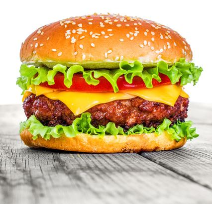

Delicious Burger

Burger made for the real meatlovers
Ingredients
- ½ tbsp olive oil
- 1 onion, peeled and finely chopped
- 1 x 500g pack British Beef Steak Mince 15% fat
- 1 tsp mixed dried herbs
- 1 egg, beaten
- 4 slices mature Cheddar (optional)
- 4 white Rolls
- few round lettuce leaves
- 1 beef tomate, sliced
- ketchup, to serve (optional)
Method
- Heat the olive oil in a frying pan, add the onion and cook for 5 minutes until softened and starting to turn golden. Set aside.
- In a bowl, combine the beef mince with the herbs and the egg. Season, add the onions and mix well. Using your hands, shape into 4 patties.
- Cook the burgers on a preheated barbecue or griddle for 5-6 minutes on each side. While the second side is cooking, lay a slice of cheese on top to melt slightly (if using).
- Meanwhile, lightly toast the cut-sides of the buns on the barbecue. Fill with the lettuce, burgers and tomato slices. Serve with ketchup, if you like.
Pair our burger with a glass of wine of your choice